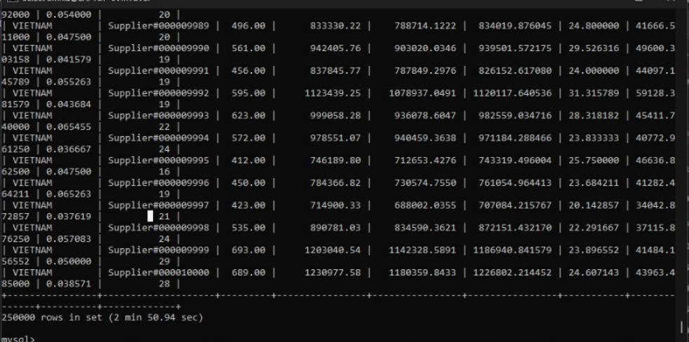
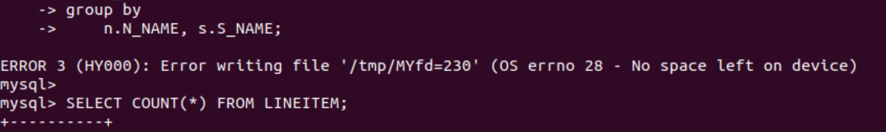
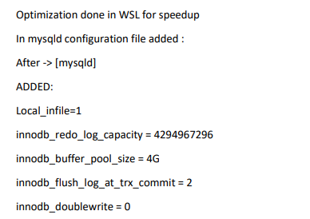
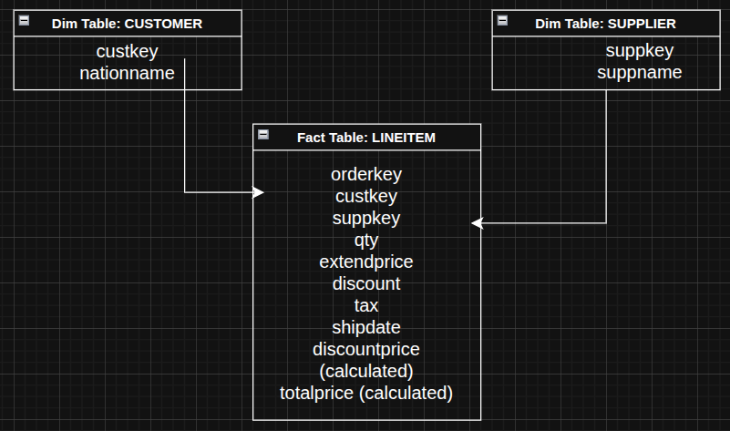
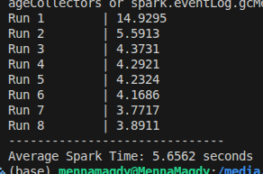

The first step was preparing the transactional database (OLTP) using the TPCH dataset.
The OLTP schema is highly normalized (3NF) and optimized for transactional workloads rather than analytical queries.
CREATE DATABASE tpch;
USE tpch;
These tables represent the normalized transactional schema (3NF).
Before designing the data warehouse, the analytical query provided in the lab was analyzed.
select
n.N_NAME as n_name,
s.S_NAME as s_name,
sum(l.l_quantity) as sum_qty,
sum(l.l_extendedprice) as sum_base_price,
sum(l.l_extendedprice * (1 - l.l_discount)) as sum_disc_price,
sum(l.l_extendedprice * (1 - l.l_discount) * (1 + l.l_tax)) as sum_charge,
avg(l.l_quantity) as avg_qty,
avg(l.l_extendedprice) as avg_price,
avg(l.l_discount) as avg_disc,
count(*) as count_order
from
lineitem l
join orders o on l.l_orderkey = o.o_orderkey
join customer c on o.o_custkey = c.c_custkey
join nation n on c.c_nationkey = n.n_nationkey
join partsupp ps on l.l_partkey = ps.ps_partkey and l.L_SUPPKEY = ps.ps_suppkey
join supplier s on ps.ps_suppkey = s.s_suppkey
where
l_shipdate <= date '1998-12-01' - interval '90' day
group by
n.N_NAME, s.S_NAME;

| Run | OLTP (min) |
|---|---|
| Run 1 | 2 min 50.94 sec |
| Run 2 | 3 min 11.49 sec |
| Run 3 | 2 min 39.52 sec |
| Run 4 | 2 min 55.83 sec |
| Run 5 | 2 min 42.87 sec |
| Run 6 | 3 min 44.34 sec |
| Run 7 | 3 min 28.06 sec |
| Run 8 | 3 min 50.30 sec |
| Average | 3 min 10.42 sec |
Problems:

Solution:

For OLAP workloads, a Star Schema was designed.
A star schema improves performance for analytical queries by reducing the number of joins required.

The ETL process converts the OLTP schema into the star schema. It reads from MySQL, performs the transformation into star schema, and loads the data into parquet files.
ETL stages:
Extract → Transform → Load
Data is extracted from the OLTP MySQL tables. This stage only involves fetching the data from the source tables and providing input for the transformation stage.
The data is converted into a target structure appropriate for OLAP supported schemas, which is the Star Schema here. Some operations to achieve this transformation include:
The transformed data is stored in Parquet format.
Parquet was chosen because:
The ETL pipeline was implemented using Apache NiFi.
NiFi provides a visual interface to create and manage data pipelines.
Example installation directory:
/opt/nifi/nifi
./bin/nifi.sh start
http://localhost:8443/nifi
To support Parquet processing, the following extensions were installed:
These files were placed inside the extensions directory:
/opt/nifi/nifi/extensions/
After adding the files, NiFi was restarted.
To connect NiFi to the MySQL database, a JDBC driver was installed.
Driver used:
mysql-connector-j-9.6.0.jar
The driver file was placed inside:
/opt/nifi/nifi/lib
A DBCPConnectionPool controller service was configured in NiFi.
Configuration:
Database Connection URL
jdbc:mysql://localhost:3306/tpch
Driver Class Name
com.mysql.cj.jdbc.Driver
Driver Location
/opt/nifi/nifi/lib/mysql-connector-j-9.6.0.jar
Username
root
Password
<mysql password>
NiFi processors are used to execute the ETL workflow. Prcoessors were selected to serve each stage of the ETL pipeline:
Typical pipeline:
GenerateTableFetch
↓
ExecuteSQL
↓
ConvertAvroToParquet
↓
PutFile
↓
PutParquet
Output files generated:
customer.parquet
supplier.parquet
lineitem.parquet
These files represent the analytical dataset.
To run analytical queries efficiently, Apache Spark was installed.
Spark provides distributed data processing and supports Parquet natively.
Downloaded version:
Spark 3.5.8
Package type:
Pre-built for Hadoop 3.3+
Extracted directory example:
~/spark-3.5.8-bin-hadoop3
Spark was tested using:
spark-shell
Expected output:
Spark session available as 'spark'
This confirmed that Spark was installed correctly.
To run Spark using Python, PySpark was installed.
Installation command:
pip install pyspark
A simple script was used to verify PySpark functionality.
from pyspark.sql import SparkSession
spark = SparkSession.builder.appName("Test").getOrCreate()
spark.range(10).show()
Example output:
+---+
| id|
+---+
| 0 |
| 1 |
| 2 |
| 3 |
| 4 |
| 5 |
| 6 |
| 7 |
| 8 |
| 9 |
+---+
This confirmed successful integration between:
Once Parquet files are available, OLAP queries can be executed using Spark.
Typical workflow:
Read Parquet → Join Dimensions → Aggregate Results
Example PySpark code:
lineitem = spark.read.parquet("lineitem.parquet")
supplier = spark.read.parquet("supplier.parquet")
nation = spark.read.parquet("nation.parquet")
result = lineitem.join(supplier, "suppkey") \
.join(nation, "nationkey") \
.groupBy("n_name","s_name") \
.agg({"l_quantity":"sum"})
Query we used:
SELECT
c.N_NAME as nation,
s.S_NAME as supplier,
SUM(CAST(f.QUANTITY AS DOUBLE)) as sum_qty,
SUM(CAST(f.EXTENDEDPRICE AS DOUBLE)) as sum_base_price,
SUM(CAST(f.EXTENDEDPRICE AS DOUBLE) * (1 - CAST(f.DISCOUNT AS DOUBLE))) as sum_disc_price,
AVG(CAST(f.QUANTITY AS DOUBLE)) as avg_qty,
COUNT(*) as count_order
FROM
fact f
JOIN customer c ON f.C_CUSTKEY = c.C_CUSTKEY
JOIN supplier s ON f.S_SUPPKEY = s.S_SUPPKEY
WHERE
f.SHIPDATE <= '1998-09-02'
GROUP BY
c.N_NAME, s.S_NAME
The full architecture of the system is:
TPCH OLTP Database (MySQL)
↓
Apache NiFi
↓
Parquet Files
↓
Apache Spark
↓
OLAP Query
This pipeline enables efficient large-scale analytical processing.
Results

| Run | OLTP (min) | OLAP (sec) |
|---|---|---|
| Run 1 | 2 min 50.94 sec | 14.9295 sec |
| Run 2 | 3 min 11.49 sec | 5.5913 sec |
| Run 3 | 2 min 39.52 sec | 4.3731 sec |
| Run 4 | 2 min 55.83 sec | 4.2921 sec |
| Run 5 | 2 min 42.87 sec | 4.2324 sec |
| Run 6 | 3 min 44.34 sec | 4.1686 sec |
| Run 7 | 3 min 28.06 sec | 3.7717 sec |
| Run 8 | 3 min 50.30 sec | 3.8911 sec |
| Average | 3 min 10.42 sec | 5.6562 sec |